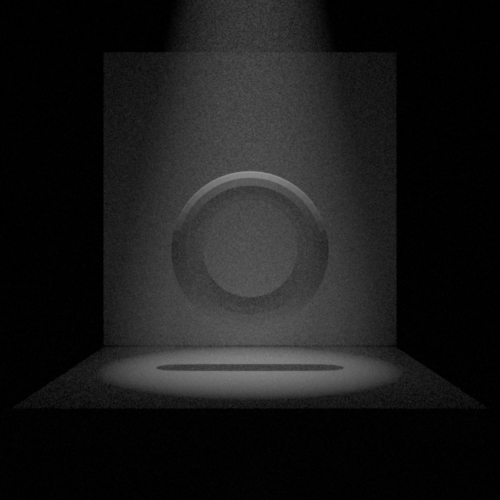
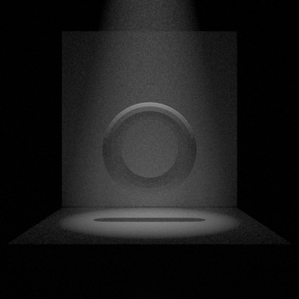
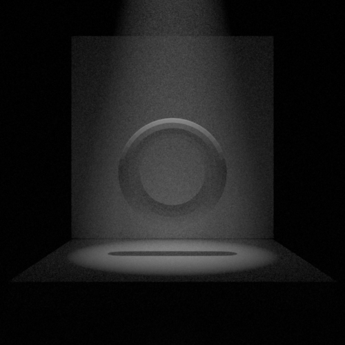
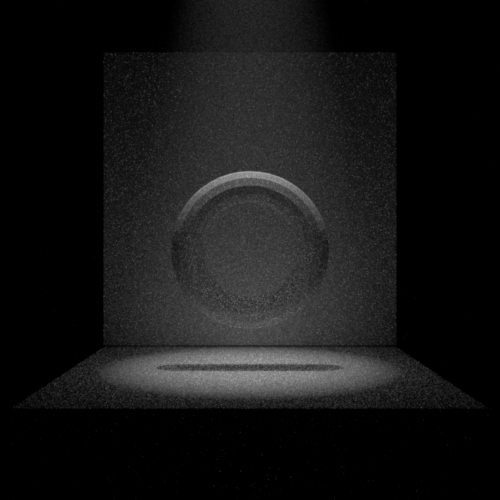
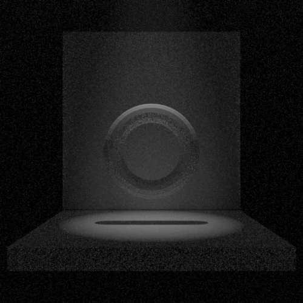
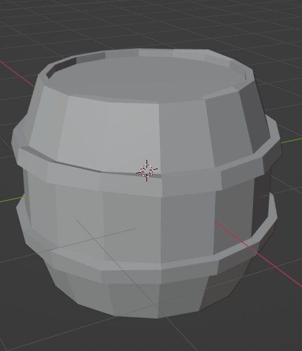
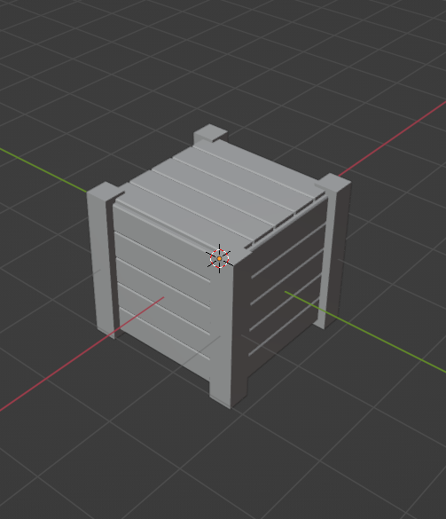
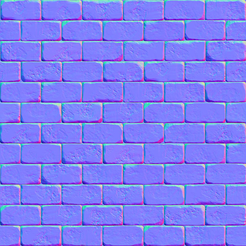

When choosing what feature I would like to implement, the homogeneous media effect was really stunning for me and I knew I wanted to make a scene with this feature as the center-piece. When I was thinking of the scene to make, I wanted to create a warehouse similar to one from the Indiana Jones' movies.
The scene is connected to the theme of change by illustrating the change that occured in the technology. Especialy around the change of engines. We can observe a train that illustrates the past transportation ways next to a formula 1 that illustrate the newest and best technologies in motor technologies. The modernity of this car next to the locomotive shows incredible change in innovative technologie that was never seen in the past.
Feature list ============| Feature | Identifier | Standard point count | Adjusted point count |
|---|---|---|---|
| Feature 1 | #M-homomed | 30 | 30 |
| Feature 2 | #XS-meshsim | 10 | 10 |
| Feature 3 | #XS-extemi | 10 | 10 |
| Feature 4 | #XS-mapping | 10 | 10 |
| Feature 5 | #S-imglight | 20 | 20 |
| Total | 80 | 80 | |
"Model multiple scattering and absorption in a participating medium. This can be used to model for example fog/god rays, colored liquids (e.g. orange juice), skin, translucent plastic, etc. If used right, this adds a lot of realism to a scene."
Design choiceThis feature was by far the most difficult one to implement. I had to go through a lot of different designs. One of my solution was to have the "fog" effect everywhere in the world.
By using it by itself, I had some great results but unfortunately, it was not able to render environment light in the background (everything was blurred in the background). I then decided to attach the medium on a mesh that would englobe all the scene.
This solution worked very well and the environment light was rendered correctly. But again, I encountered some problem when designing the final scene. The problem encountered was that the rendering was very slow and I think the reason is that the accel class provided by the teacher had some difficulty calculating rays intersections when inside a mesh.
The final solution is a mix of both previous solutions. Basicaly, the integrator creates a bounding box that englobes the scene (defined in the scene parameter). I then assume that the rays are inside the medium and do the calculation just as the first solution. When the ray hit nothing, I checked if it intersected with the bounding box and continue the calculation based on the result. This solution greatly improved the rendering performance compared to the second solution whilst also being able to render the environment light.
The implementation of this feature can be found in the `vol_path.cpp` and `vol_path_mis.cpp` file. The implementation works is as follow: March in the medium and capture the light contribution at each steps. The program repeat until the step is greater than the maximum step allowed. When this situation happens, it means the ray is either outside the medium or on a diffuse/dielectric surface. On the second case, the program will calculate the light contribution like usual (depend on what method the integrator use).
ValidationMitsuba (left) with albedo=1 and sigma_t=0.05. Nori (right) with albedo=0.3 and sigma_t=0.01.
 

I tried my best to create the same scene in both Mitsuba and Nori engine. Unfortunately, for some reason that I was not able to figure out, the parameters required to create a similar scene are quite different. Nonetheless, I think if we omit this detail, the render achieved by Nori compared to Mitsuba provides enough context to say that the implementation in its hole is validated.
Here is a comparison with diferrent phase function parameter. In order: g = 0, g = 0.7, g = -0.7
   Feature 2 ========= Description"Design a 3D mesh yourself, or run a physical simulation in a software like Blender (rigid body, fluid dynamics, smoke, fire, ...) to produce content that is part of your final rendering. This item can only be used once (even if you design multiple shapes)"
Design choiceThis project was a great opportunity to learn how to use blender. Since I wanted my scene to be in a warehouse, I decided to create something that is usualy found in one. Therefore, I created a box crate and a barrel. When designing those 2 meshs, I encountered a problem where some triangle were missing when rendering. After some investigation, I realised that some face geometry in blender were maybe hard to export into an obj file. The solution was to simply divide some surface in order for it to be easily divided in triangle. For example, the top of the barrel that is in a circular shape need some division in order for it to be exported in Nori.
Here is an example of the change I'm describingThis is the result of the mesh I created. I learned a lot of usefull tools like the array modifier, the mirror edit and more.
  Feature 3 ========= Description"Implement a new type of emitter. For example: spotlights, directional lights or textured lights. This feature can be used at most once (one additional emitter), extra emitters will not grant extra points."
Design choiceThe implementation of the spotlight can be found in `spotlight.cpp`. Spotlight emit light in a cone shape toward a single direction. They behave in a similar way to a point light but also need a direction and an angle parameter. When calculating the radiance in the `Le` function, the program needs to confirm that the point is inside the cone shape by doing a dot product. If it is inside the cone, the point received the light. Else it receives nothing. The added smoothing effect can use any function to do it. For the more simplicity, I decided that the intensity of the light will be the inverse of the distance from the center of the cone shape.
The spotlight emitter needs to be attributed to a mesh and receive in parameter the radiance, the angle, the direction and the position of it. Taking a step back, a more adequate method would be to change this so that spotlight are added as a standalone object in the scene (not part of any mesh).
ValidationMitsuba on the left, Nori on the right
If we ommit the smoothing effect that is different from Mistuba and Nori, the effects are the same and therefore validate that the implementation of the spotlight are accurate.
Feature 4 ========= Description"Model small surface irregularities by perturbing the shading coordinate frame based on a texture."
Design choiceNormal mapping is used to create 3D effect on surfaces that are usualy flat. To achieve it, the program only needs to alter the normal of the surface by the one represented on the texture. I decided to go with the normal mapping because I already knew how to do it from a precedent class. To implement this, I needed a way to load and get a pixel value from a texture. I created a `texture.cpp` that handled this. For simplicity, I reused the `Bitmap` implementation that was provided and extended it a bit for an easier usage. Therefore, only `exr` file can be loaded as a texture. In the integrator, when a ray collide with a mesh, it checked if this mesh has a texture and if so, overides the normal of it with the value from the texture at the uv coordinate that is retrieve from the intersection struct.
ValidationThis is the texture used for normal mapping
 Mitsuba on the left, Nori on the rightFor some reason, Mitsuba does not behave in the same way as in my implementation (We can perseive defference on the texture itself where it seems that it is flipped in Mitsuba). Nonetheless, we can clearly see that the implementation in Nori is correct and use the texture to effectively alter the normal of the mesh
Feature 5 ========= Description"Simulate natural illumination from an environment map texture. We recommend implementing this feature, which greatly adds to the realism of the scene!"
Design choiceSkybox is an easy way to create the illusion of realism without requiring to much computation ressources. To acheive it, I decided to implement a cube map. Basically, it's a giant cube that is stiched to create the effect of having a 360 degree skybox. The class Envmap is used to store the 6 textures required for a cube map and convert a direction to a uv coordinate at the correct texture. In the preprocess of the integrator, it will check if any Envmap is in the Scene class. If it does, it will create an Infinite emitter. This emitter is responsible to implement the `Le`, `Sample` and `pdf` using the correct function from the Envmap class. To usage for environment mapping is simple. When the integrator encounter no mesh intersection, add the radiance from the environment map for this direction and break the loop. Taking a step back, I would not use a cube map but a HDR texure instead because the implementation would be similar and it seems that there is more HDR textures available on the web.
The implementation for this feature can be found in `infinite.h`, `envmap.h` and `envmap.cpp`.
Validation Comparison beetween Mitsuba (left) and Nori (right)We can observe that the result from Mitsuba and Nori are similar in some way but the lighting that affects the monkey object is quite different. Since I implemented my feature with a cube map, I had to use a tool that converts a `HDR` file to 6 differents images for my engine. I have reason to think that the converter lost some data because the output file were in the jpg format and that would explain some of the difference from both engine.
Feedback ======== I think the workload for this class is a bit much for 6 credits. One way you could reduce it would be to work in teams of 2 for the homework and then work alone for the final project. Other than that, the course is awesome and provide a lot of learning material that will surely be used in the future.